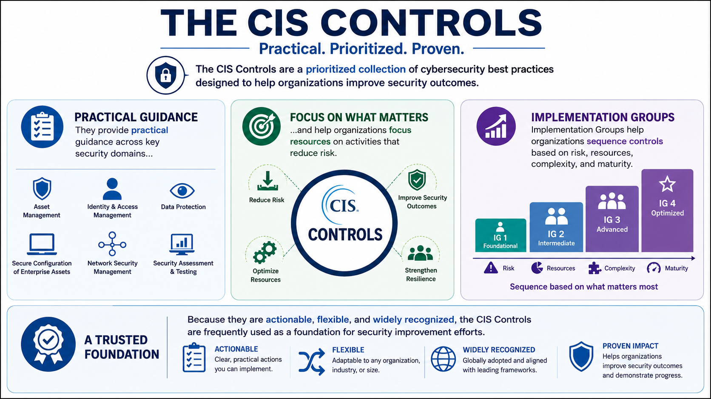

What Are the CIS Controls?
Course Summary
Connecting to LMS... Progress: in progress
Version 1.0 | Date: 2026-06-16 | Educational guidance for understanding CIS Controls concepts.

Narration
The CIS Controls are a prioritized collection of cybersecurity best practices designed to help organizations improve security outcomes.
They provide practical guidance across key security domains and help organizations focus resources on activities that reduce risk.
Implementation Groups help organizations sequence controls based on risk, resources, complexity, and maturity.
Because they are actionable, flexible, and widely recognized, the CIS Controls are frequently used as a foundation for security improvement efforts.